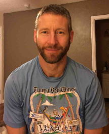

Welcome to Martin Tennis Academy, where passion for the game meets excellence in training.
Gordon Martin - Founder & Head Coach
Gordon has been playing tennis since he was 7 years old. With extensive training in France under a professional coach who has worked with some of the top-ranked players in the country, Gordon has honed his skills to become an exceptional coach. He played high school and college tennis in New York, where he achieved notable success in singles [#2] and doubles [#1] matches. Gordon’s coaching philosophy emphasizes positive feedback, technical excellence, and having fun on the court.
In addition to teaching, Gordon served as an Assistant Coach at Canterbury High School from 2019 to 2023, where he helped students excel in varsity tennis. He also plans to build competitive tennis programs for both youth and adults at The Ridge at Wiregrass Ranch, aiming to foster a strong tennis community.

“The absolute joy I feel teaching and playing tennis is a singular source of energy for me that propels me to seek out betterment in myself and every single student that I have the honor of working with. - - Coach Gordon”
“My biggest surprise of 2024 was how much I've ended up enjoying pickleball. Wow! Way harder than it looks, and ***fortunately***, way more physical. I Love it! - - Coach Gordon”
Our Mission
At Martin Tennis Academy, our mission is to help players of all levels unlock their full potential. Whether you’re a beginner looking to learn the basics or an advanced player striving for college scholarships or professional ranks, our comprehensive approach combines technical training, strategic development, and physical conditioning to achieve your goals.
What Sets Us Apart
Our academy offers unique programs tailored to individual needs. From advanced technology integration like SwingVision to personalized feedback sessions, we ensure every player receives the tools they need to succeed. Our programs include group lessons, private coaching, cardio tennis, and match play sessions for all age groups.
"Martin Tennis Academy transformed my game! The personalized coaching made all the difference." - Carlos Hernandez